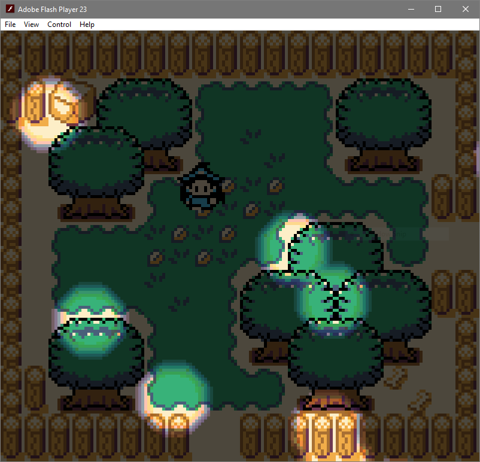
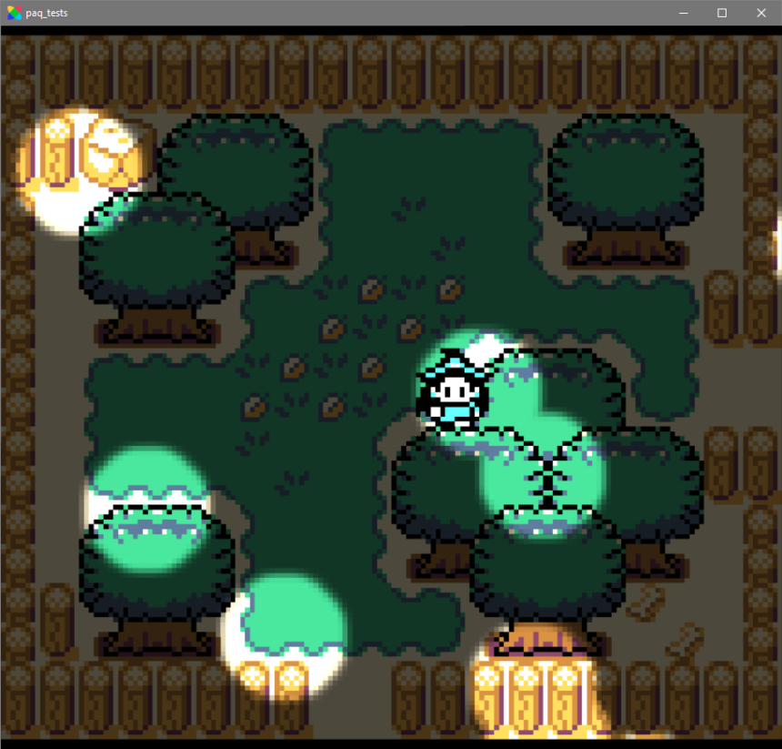
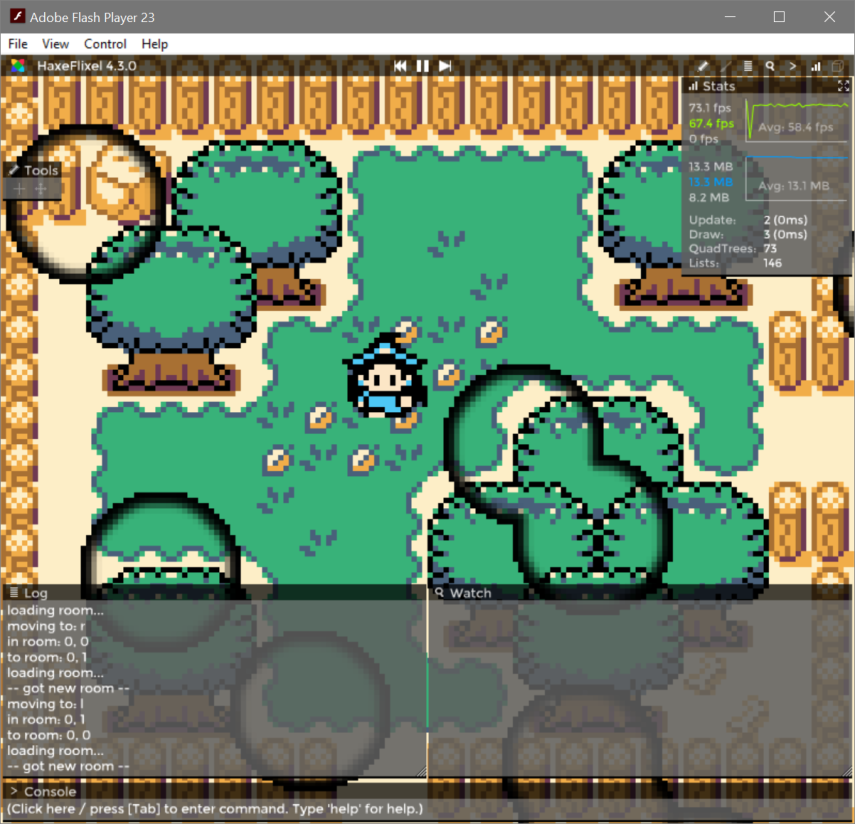
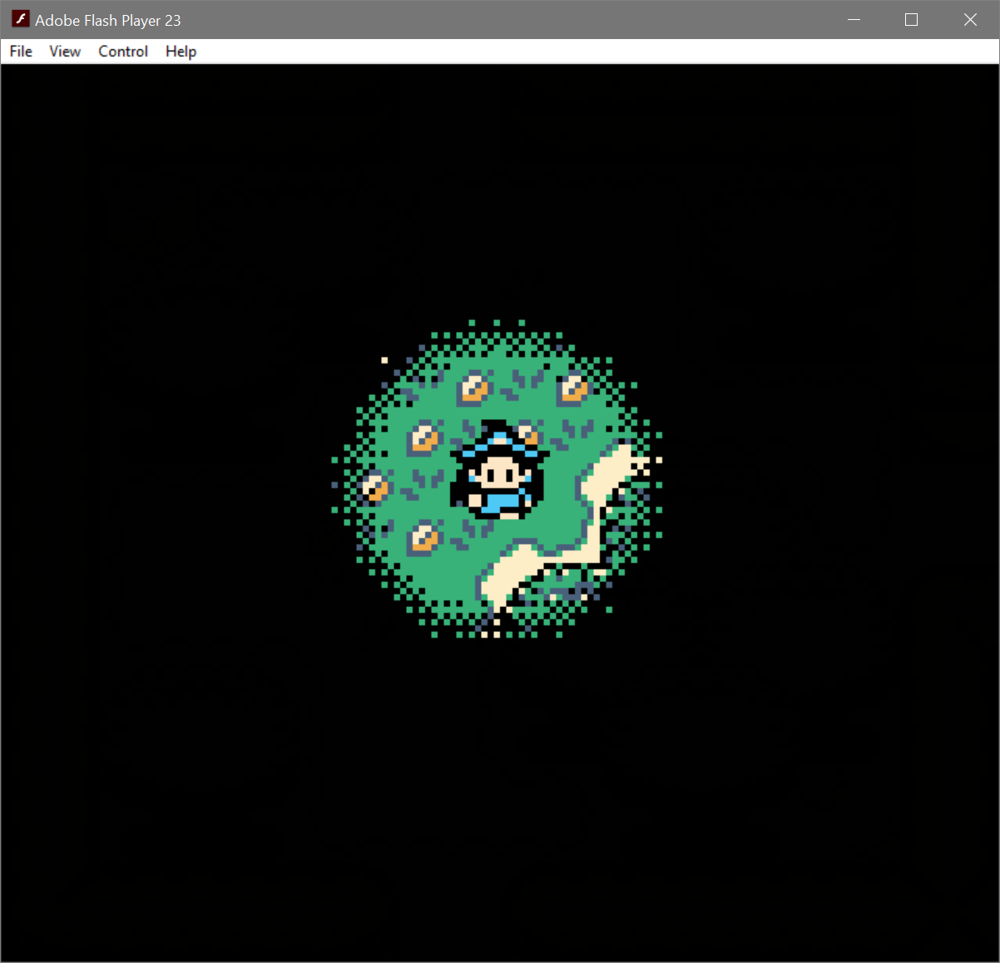

Lately I've been exploring Haxe/OpenFL/Haxeflixel, and I wanted to add simple, oldschool “cutout” lighting to my project. I also wanted whatever implementation I used to be portable; it needed to be identical on html5, flash, and cpp targets.
It took me most of a day’s work to find a solution to my problem, after reading lots of documentation and finding obscure articles with pieces of the puzzle. I posted a clip of my results to Twitter, and some folks asked for an explanation, so here we go!
Disclaimer: this sequence of events is synthesized from my terrible short term memory, re-reading Discord logs with my SO to find screenshots, and checking my browser history, but I have tried to include all the source reading I used, to give credit where it is due.
- Attempt 1: openfl.display.BlendMode
- Attempt 2: openfl.geom.ColorTransform
- Source Code
- In Action
- Further Thoughts
Attempt 1: openfl.display.BlendMode
The first promising idea, from this discussion
: make a big black FlxSprite with BlendMode.MULTIPLY,
then stamp light sprites (value indicates light level) with BlendMode.SCREEN to it.
In theory, the white parts of the shadowmap won’t change the underlying pixels
at all, leaving them “lit”.
This method works really well… for the Flash target. You can even use some color in your lights, if you like.

However, built for Windows native:

And, built for html5 (screenshot missing), the white bits wash out underlying
colors and overlapping lights don’t work (corners are visible despite
BlendMode.SCREEN).
Lesson: OpenFL docs claiming that a blendmode exists on two platforms should not be taken as an indication that the implementations are remotely similar in result.
Attempt 2: openfl.geom.ColorTransform
So, BlendMode is out. It’s not reliable and I would prefer to not use it at all.
(also worth noting: FlxCamera.color isn’t portable, either, so I'm using my
eventual solution for that functionality, too).
At this point, I was very lucky to find this post
by Wy Leong. The most important takeaway, for me, was this: new ColorTransform(0,0,0,-1,0,0,0,255)
What does this do? The first 4 parameters are Float channel multipliers [0.0,1.0]
for the existing pixel data, and the remaining 4 are Int channel offsets [-255,255]
to apply after the multiply is done. So this ColorTransform will effectively
get the complement of an image’s alpha channel, or “flip” it.
Excellent! So, with this method: make a FlxColor.TRANSPARENT image, then stamp
light sprites (alpha indicates light level) to it, then apply the ColorTransform,
and that’s it! This means you could even use an object’s ordinary sprite as a
light if you wanted, to create a self-lit surface effect. Cool!
Only, there’s a slight snag with portability (sigh). For the html5 target, the
transform is applied as expected. An empty pixel, 0x00000000 has its alpha
channel flipped, giving 0x000000ff. Great! Maths!
But on cpp and Flash targets, I got this:

How odd. Seemingly, transparent pixels are ignored by the transform. I have been unable to find documentation of this behavior, so I have no way of knowing if this was a case of user error or a limitation (or bug) of OpenFL.
The solution, as such, is simple: on Flash and cpp, instead of transparent pixels, I used nearly-transparent pixels, which are transformed as one would expect them to be and which are visually indistinguishable in the result.
var _shadowColor =
#if html5 FlxColor.TRANSPARENT
#else new FlxColor(0x01010101)
#end;
With this single preprocessor switch in place, things work as they should. Awesome! I was both thrilled and annoyed.
Source Code
Below, I am including the entire Lighting class I have written. It is incredibly short and simple, but maybe someone will get use out of it.
/*
@author: Pennie Quinn
@created: Mar 13, 2018
A simple "cutout" lighting system. Works the same on html5, flash, and cpp
targets (in my tests thus far).
NOTE: mobile targets have not been tested!
usage:
var lighting = new Lighting();
lighting.alpha = 0.7; // or whatever
//lighting.blue = 20; // for example
//lighting.color = FlxColor.BLACK;
add(lighting);
...
...
var light = new FlxSprite();
light.loadGraphic(...);
lighting.add(light);
*/
package paq;
import openfl.geom.Rectangle;
import openfl.geom.ColorTransform;
import flixel.FlxG;
import flixel.FlxObject;
import flixel.FlxSprite;
import flixel.group.FlxGroup;
import flixel.util.FlxColor;
class Lighting extends FlxGroup
{
var _shadowColor =
#if html5 FlxColor.TRANSPARENT
#else new FlxColor(0x01010101)
#end;
var _colorTransform = new ColorTransform(0,0,0,-1,0,0,0,255);
var _boundsRect:Rectangle;
var _shadow:FlxSprite;
// 0 to 1.0
public var alpha(get, set):Float;
function get_alpha() { return _shadow.alpha; }
function set_alpha(x) { return _shadow.alpha = x; }
// -255 to 255
public var red(get, set):Float;
function get_red(){ return _colorTransform.redOffset; }
function set_red(x){ return _colorTransform.redOffset = x; }
// -255 to 255
public var green(get, set):Float;
function get_green(){ return _colorTransform.greenOffset; }
function set_green(x){ return _colorTransform.greenOffset = x; }
// -255 to 255
public var blue(get, set):Float;
function get_blue(){ return _colorTransform.blueOffset; }
function set_blue(x){ return _colorTransform.blueOffset = x; }
public var color(get, set):FlxColor;
function get_color() { return _colorTransform.color; }
function set_color(x:FlxColor):FlxColor
{
_colorTransform.redOffset = x.red;
_colorTransform.greenOffset = x.green;
_colorTransform.blueOffset = x.blue;
return _colorTransform.color;
}
override public function new(?capacity:Int = 0)
{
var w = FlxG.width;
var h = FlxG.height;
_shadow = new FlxSprite(0,0);
_shadow.scrollFactor.set(0,0);
_shadow.allowCollisions = FlxObject.NONE;
_shadow.moves = false;
_shadow.immovable = true;
_boundsRect = new Rectangle(0, 0, w, h);
_shadow.makeGraphic(w, h, _shadowColor, true);
_shadow.alpha = 1;
super();
}
function _drawLight(light:FlxSprite):Void
{
if (light.graphic == null) return; // necessary?
var pos = light.getScreenPosition();
_shadow.stamp(light, Std.int(pos.x), Std.int(pos.y));
}
override public function draw():Void
{
// clear the shadow map
_shadow.pixels.fillRect(_boundsRect, _shadowColor);
// draw the lights into the shadow map
this.forEachOfType(FlxSprite, _drawLight, true);
// flip _shadow's alpha channel, making lights a cutout sprite
_shadow.pixels.colorTransform(_boundsRect, _colorTransform);
// force update for draw -- necessary?
_shadow.drawFrame(true);
// draw the shadow map
_shadow.draw();
}
}
In Action
Here is an example of my final result:

The light seen is a vanilla FlxSprite using this sprite sheet:
Further Thoughts
For use cases other than my current project, you could extend this with typical lighting system things: for example, a high-res game would likely want a shadowmap of lower resolution than the game itself with bilinear filtering, which is simple to do. In a game with lots of lights or a large world, culling would be a good idea.
In my game’s case, the “world” never exceeds two screens of space, and the number of lights will remain quite small, so I haven’t bothered and likely won’t.
Hopefully this article was helpful! Thanks for reading :)
If you want to hear about my future HaxeFlixel shenanigans, check out my Twitter.